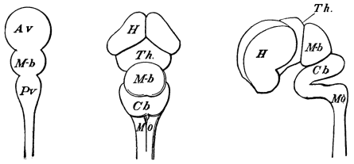
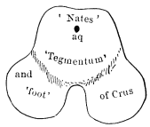
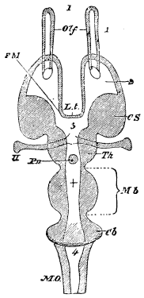
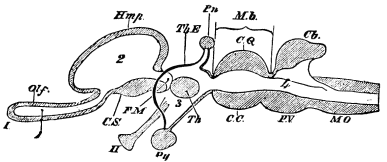
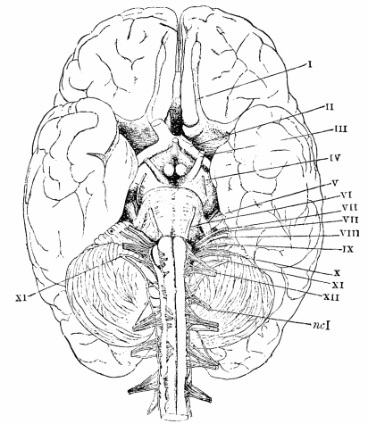
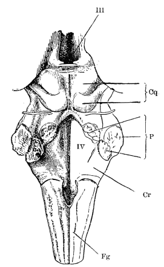
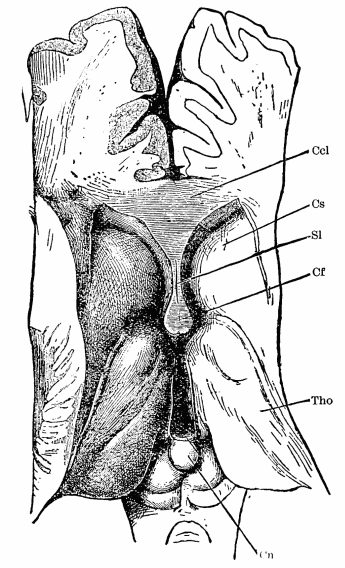
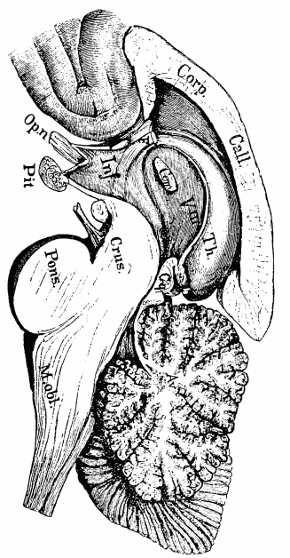
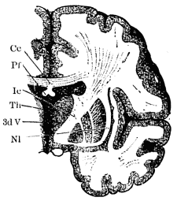

Chapter 7: The Structure of the Brain¶
7.1 The Structure of the Brain¶

Embryological Sketch.—The brain is a sort of pons asinorum in anatomy until one gets a certain general conception of it as a clue. Then it becomes a comparatively simple affair. The clue is given by comparative anatomy and especially by embryology. At a certain moment in the development of all the higher vertebrates the cerebro-spinal axis is formed by a hollow tube containing fluid and terminated in front by an enlargement separated by transverse constrictions into three 'cerebral vesicles,' so called (see Fig. 28). The walls of these vesicles thicken in most places, change in others into a thin vascular tissue, and in others again send out processes which produce an appearance of farther subdivision. The middle vesicle or mid-brain (Mb in the figures) is the least affected by change. Its upper walls thicken into the optic lobes, or corpora quadrigemina as they are named in man; its lower walls become the so-called peduncles or crura of the brain; and its cavity dwindles into the aqueduct of Silvius. A section through the adult human mid-brain is shown in Fig. 31.


The anterior and posterior vesicles undergo much more considerable change. The walls of the posterior vesicle thicken enormously in their foremost portion and form the cerebellum on top (Cb in all the figures) and the pons Varolii below (P.V. in Fig. 33). In its hindmost portions the posterior vesicle thickens below into the medulla oblongata (Mo in all the figures), whilst on top its walls thin out and melt, so that one can pass a probe into the cavity without breaking through any truly nervous tissue. The cavity which one thus enters from without is named the fourth ventricle (4 in Figs. 32 and 33). One can run the probe forward through it, passing first under the cerebellum and then under a thin sheet of nervous tissue (the valve of Vieussens) just anterior thereto, as far as the aqueduct of Silvius. Passing through this, the probe emerges forward into what was once the cavity of the anterior vesicle. But the covering has melted away at this place, and the cavity now forms a deep compressed pit or groove between the two walls of the vesicle, and is called the third ventricle (3 in Figs. 32 and 33). The 'aqueduct of Sylvius' is in consequence of this connection often called the iter a tertio ad quartum ventriculum. The walls of the vesicle form the optic thalami (Th in all the figures).

From the anterior vesicle just in front of the thalami there buds out on either side an enlargement, into which the cavity of the vesicle continues, and which becomes the hemisphere of that side. In man its walls thicken enormously and form folds, the so-called convolutions, on their surface. At the same time they grow backwards rather than forwards of their starting-point just in front of the thalamus, arching over the latter; and growing fastest along their top circumference, they end by bending downwards and forwards again when they have passed the rear end of the thalamus. When fully developed in man, they overlay and cover in all the other parts of the brain. Their cavities form the lateral ventricles, easier to understand by a dissection than by a description. A probe can be passed into either of them from the third ventricle at its anterior end; and like the third ventricle, their wall is melted down along a certain line, forming a long cleft through which they can be entered without rupturing the nervous tissue. This cleft, on account of the growth of the hemisphere outwards, backwards, and then downwards from its starting point, has got rolled in and tucked away beneath the apparent surface.1
At first the two hemispheres are connected only with their respective thalami. But during the fourth and fifth months of embryonic life they become connected with each other above the thalami through the growth between them of a massive system of transverse fibres which crosses the median line like a great bridge and is called the corpus callosum. These fibres radiate in the walls of both hemispheres and form a direct connection between the convolutions of the right and of the left side. Beneath the corpus callosum another system of fibres called the fornix is formed, between which and the corpus callosum there is a peculiar connection. Just in front of the thalami, where the hemispheres begin their growth, a ganglionic mass called the corpus striatum (C.S., Figs. 32 and 33) is formed in their wall. It is complex in structure, consisting of two main parts, called nucleus lenticularis and nucleus candatus respectively. The figures, with their respective explanations, will give a better idea of the farther details of structure than any verbal description; so, after some practical directions for dissecting the organ, I will pass to a brief account of the physiological relations of its different parts to each other.
Dissection of Sheep's Brain.—The way really to understand the brain is to dissect it. The brains of mammals differ only in their proportions, and from the sheep's one can learn all that is essential in man's. The student is therefore strongly urged to dissect a sheep's brain. Full directions of the order of procedure are given in the human dissecting books, e.g. Holden's Practical Anatomy (Churchill), Morrell's Student's Manual of Comparative Anatomy and Guide to Dissection (Longmans), and Foster and Langley's Practical Physiology (Macmillan). For the use of classes who cannot procure these books I subjoin a few practical notes. The instruments needed are a small saw, a chisel with a shoulder, and a hammer with a hook on its handle, all three of which form part of the regular medical autopsy-kit and can be had of surgical-instrument-makers. In addition a scalpel, a pair of scissors, a pair of dissecting-forceps, and a silver probe are required. The solitary student can find home-made substitutes for all these things but the forceps, which he ought to buy.
The first thing is to get off the skull-cap. Make two saw-cuts, through the prominent portion of each condyle (or articular surface bounding the hole at the back of the skull, where the spinal cord enters) and passing forwards to the temples of the animal. Then make two cuts, one on each side, which cross these and meet in an angle on the frontal bone. By actual trial, one will find the best direction for the saw-cuts. It is hard to saw entirely through the skull-bone without in some places also sawing into the brain. Here is where the chisel comes in—one can break by a smart blow on it with the hammer any parts of the skull not quite sawn through. When the skull-cap is ready to come off one will feel it 'wobble.' Insert then the hook under its forward end and pull firmly. The bony skull-cap alone will come away, leaving the periosteum of the inner surface adhering to that of the base of the skull, enveloping the brain, and forming the so-called dura mater or outer one of its 'meninges.' This dura mater should be slit open round the margins, when the brain will be exposed wrapped in its nearest membrane, the pia mater, full of blood-vessels whose branches penetrate the tissues.
The brain in its pia mater should now be carefully 'shelled out.' Usually it is best to begin at the forward end, turning it up there and gradually working backwards. The olfactory lobes are liable to be torn; they must be carefully scooped from the pits in the base of the skull to which they adhere by the branches which they send through the bone into the nose-cavity. It is well to have a little blunt curved instrument expressly for this purpose. Next the optic nerves tie the brain down, and must be cut through—close to the chiasma is easiest. After that comes the pituitary body, which has to be left behind. It is attached by a neck, the so-called infundibulum, into the upper part of which the cavity of the third ventricle is prolonged downwards for a short distance. It has no known function and is probably a 'rudimentary organ.' Other nerves, into the detail of which I shall not go, must be cut successively. Their places in the human brain are shown in Fig. 34. When they are divided, and the portion of dura mater (tentorium) which projects between the hemispheres and the cerebellum is cut through at its edges, the brain comes readily out.

It is best examined fresh. If numbers of brains have to be prepared and kept, I have found it a good plan to put them first in a solution of chloride of zinc, just dense enough at first to float them, and to leave them for a fortnight or less. This softens the pia mater, which can then be removed in large shreds, after which it is enough to place them in quite weak alcohol to preserve them indefinitely, tough, elastic, and in their natural shape, though bleached to a uniform white color. Before immersion in the chloride all the more superficial adhesions of the parts must be broken through, to bring the fluid into contact with a maximum of surface. If the brain is used fresh, the pia mater had better be removed carefully in most places with the forceps, scalpel, and scissors. Over the grooves between the cerebellum and hemispheres, and between the cerebellum and medulla oblongata, thin cobwebby moist transparent vestiges of the arachnoid membrane will be found.
The subdivisions may now be examined in due order. For the convolutions, blood-vessels, and nerves the more special books must be consulted.
First, looked at from above, with the deep longitudinal fissure between them, the hemispheres are seen partly overlapping the intricately wrinkled cerebellum, which juts out behind, and covers in turn almost all the medulla oblongata. Drawing the hemispheres apart, the brilliant white corpus callosum is revealed, some half an inch below their surface. There is no median partition in the cerebellum, but a median elevation instead.
Looking at the brain from below, one still sees the longitudinal fissure in the median line in front, and on either side of it the olfactory lobes, much larger than in man; the optic tracts and commissure or 'chiasma'; the infundibulum cut through just behind them; and behind that the single corpus albicans or mamillare, whose function is unknown and which is double in man. Next the crura appear, converging upon the pons as if carrying fibres back from either side. The pons itself succeeds, much less prominent than in man; and finally behind it comes the medulla oblongata, broad and flat and relatively large. The pons looks like a sort of collar uniting the two halves of the cerebellum, and surrounding the medulla, whose fibres by the time they have emerged anteriorly from beneath the collar have divided into the two crura. The inner relations are, however, somewhat less simple than what this description may suggest.
Now turn forward the cerebellum; pull out the vascular choroid plexuses of the pia, which fill the fourth ventricle; and bring the upper surface of the medulla oblongata into view. The fourth ventricle is a triangular depression terminating in a posterior point called the calamus scriptorius. (Here a very fine probe may pass into the central canal of the spinal cord.) The lateral boundary of the ventricle on either side is formed by the restiform body or column, which runs into the cerebellum, forming its inferior or posterior peduncle on that side. Including the calamus scriptorius by their divergence, the posterior columns of the spinal cord continue into the medulla as the fasciculi graciles. These are at first separated from the broad restiform bodies by a slight groove. But this disappears anteriorly, and the 'slender' and 'ropelike' strands soon become outwardly indistinguishable.
Turn next to the ventral surface of the medulla, and note the anterior pyramids, two roundish cords, one on either side of the slight median groove. The pyramids are crossed and closed over anteriorly by the pons Varolii, a broad transverse band which surrounds them like a collar, and runs up into the cerebellum on either side, forming its middle peduncles. The pons has a slight median depression and its posterior edge is formed by the trapezium on either side. The trapezium consists of fibres which, instead of surrounding the pyramid, seem to start from alongside of it. It is not visible in man. The olivary bodies are small eminences on the medulla lying just laterally of the pyramids and below the trapezium.

Now cut through the peduncles of the cerebellum, close to their entrance into that organ. They give one surface of section on each side, though they receive contributions from three directions. The posterior and middle portions we have seen: the anterior peduncles pass forward to the corpora quadrigemina. The thin white layer of nerve-tissue between them and continuous with them is called the valve of Vieussens. It covers part of the canal from the fourth ventricle to the third. The cerebellum being removed, examine it, and cut sections to show the peculiar distribution of white and gray matter, forming an appearance called the arbor vitæ in the books.
Now bend up the posterior edge of the hemispheres, exposing the corpora quadrigemina (of which the anterior pair are dubbed the nates and the posterior the testes), and noticing the pineal gland, a small median organ situated just in front of them and probably, like the pituitary body, a vestige of something useful in premammalian times. The rounded posterior edge of the corpus callosum is visible now passing from one hemisphere to the other. Turn it still farther up, letting the medulla, etc., hang down as much as possible and trace the under surface from this edge forward. It is broad behind but narrows forward, becoming continuous with the fornix. The anterior stem, so to speak, of this organ plunges down just in front of the optic thalami, which now appear with the fornix arching over them, and the median third ventricle between them. The margins of the fornix, as they pass backwards, diverge laterally farther than the margins of the corpus callosum, and under the name of corpora fimbriata are carried into the lateral ventricles, as will be seen again.
It takes a good topographical mind to understand these ventricles clearly, even when they are followed with eye and hand. A verbal description is absolutely useless. The essential thing to remember is that they are offshoots from the original cavity (now the third ventricle) of the anterior vesicle, and that a great split has occurred in the walls of the hemispheres so that they (the lateral ventricles) now communicate with the exterior along a cleft which appears sickle shaped, as it were, and folded in.
The student will probably examine the relations of the parts in various ways. But he will do well to begin in any case by cutting horizontal slices off the hemispheres almost down to the level of the corpus callosum, and examining the distribution of gray and white matter on the surfaces of section, any one of which is the so-called centrum ovale. Then let him cut down in a fore-and-aft direction along the edge of the corpus callosum, till he comes 'through' and draw the hemispherical margin of the cut outwards—he will see a space which is the ventricle, and which farther cutting along the side and removing of its hemisphere-roof will lay more bare. The most conspicuous object on its floor is the nucleus caudatus of the corpus striatum.

Cut the corpus callosum transversely through near its posterior edge and bend the anterior portion of it forwards and sideways. The rear edge (splenium) left in situ bends round and downwards and becomes continuous with the fornix. The anterior part is also continuous with the fornix, but more along the median line, where a thinnish membrane, the septum lucidum, triangular in shape, reaching from the one body to the other, practically forms a sort of partition between the contiguous portion of the lateral ventricles on the two sides. Break through the septum if need be and expose the upper surface of the fornix, broad behind and narrow in front where its anterior pillars plunge down in front of the third ventricle (from a thickening in whose anterior walls they were originally formed), and finally penetrate the corpus albicans. Cut these pillars through and fold them back, exposing the thalamic portion of the brain, and noting the under surface of the fornix. Its diverging posterior pillars run backwards, downwards, and then forwards again, forming with their sharp edges the corpora fimbriata, which bound the cleft by which the ventricle lies open. The semi-cylindrical welts behind the corpora fimbriata and parallel thereto in the wall of the ventricle are the hippocampi. Imagine the fornix and corpus callosum shortened in the fore-and-aft direction to a transverse cord; imagine the hemispheres not having grown backwards and downwards round the thalamus; and the corpus fimbriatum on either side would then be the upper or anterior margin of a split in the wall of the hemispheric ventricle of which the lower and posterior margin would be the posterior border of the corpus striatum where it grows out of the thalamus.
The little notches just behind the anterior pillar of the fornix and between them and the thalami are the so-called foramina of Monro through which the plexus of vessels, etc., passes from the median to the lateral ventricles.
See the thick middle commissure joining the two thalami, just as the corpus callosum and fornix join the hemispheres. These are all embryological aftergrowths. Seek also the anterior commissure crossing just in front of the anterior pillars of the fornix, as well as the posterior commissure with its lateral prolongations along the thalami, just below the pineal gland.
On a median section, note the thinnish anterior wall of the third ventricle and its prolongation downwards into the infundibulum.
Turn up or cut off the rear end of one hemisphere so as to see clearly the optic tracts turning upwards towards the rear corner of the thalamus. The corpora geniculata to which they also go, distinct in man, are less so in the sheep. The lower ones are visible between the optic-tract band and the 'testes,' however.
The brain's principal parts are thus passed in review. A longitudinal section of the whole organ through the median line will be found most instructive (Fig. 37). The student should also (on a fresh brain, or one hardened in bichromate of potash or ammonia to save the contrast of color between white and gray matter) make transverse sections through the nates and crura, and through the

hemispheres just in front of the corpus albicans. The latter section shows on each side the nucleus lenticularis of the corpus striatum, and also the inner capsule (see Fig. 38, Nl, and Ic).

When all is said and done, the fact remains that, for the beginner, the understanding of the brain's structure is not an easy thing. It must be gone over and forgotten and learned again many times before it is definitively assimilated by the mind. But patience and repetition, here as elsewhere, will bear their perfect fruit.
-
All the places in the brain at which the cavities come through are filled in during life by prolongations of the membrane called pia mater, carrying rich plexuses of blood-vessels in their folds. ↩